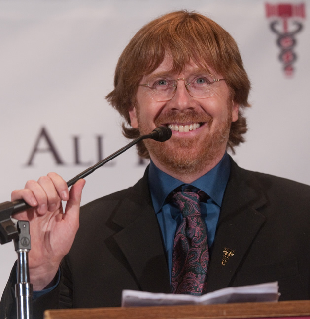
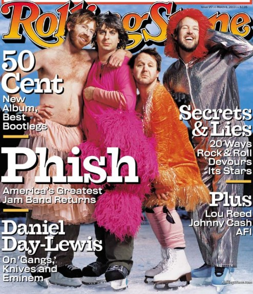

Back and Better Than Ever
| Home | Band Members | History | Popular Discography | Live |
Back and Better Than Ever

 After making a full recovery from drugs and alcohol, Trey has advocated for the benefits of drug court, which he completed in order to get sober and remain sober today.
Phish received the Jammys Lifetime Achievement Award on May 7, 2008 in The Theater at Madison Square Garden.
After performing three songs together at the September 2008 wedding of their former tour road manager, Phish announced that they would perform three reunion shows on March 6, 7, and 8, 2009 at the Hampton Coliseum in Hampton, Virginia. Following the reunion weekend, the band played thirteen shows of a summer tour, including an inaugural concert at Fenway Park and headlining Bonnaroo 2009 in June with Bruce Springsteen and the E Street Band, Beastie Boys, and Nine Inch Nails. During their first set of the second day, Phish was joined by Springsteen on guitar for "Mustang Sally," "Bobby Jean," and "Glory Days." Twelve additional dates in July and August were announced as a Late Summer Tour, including four nights at Red Rocks, two nights at The Gorge, a stop in Chicago, and several nights in the Northeast. Phish's fourteenth studio album, Joy, produced by Steve Lillywhite, was released September 8, 2009. A single from the album, "Time Turns Elastic", was released on iTunes in late May. The band played nine of the ten tracks throughout the course of the first leg of their summer tour, starting with "Ocelot" and then "Time Turns Elastic" on the first night of the tour.The band announced a "save-the-date" for a three-day festival on October 30 & 31 and November 1. Phish.com contained an animated map of the United States, and individual states were slowly removed from the map, leaving California. Confirming several rumors, the band announced that Festival 8 would take place in Indio, California. Festival 8 featured the band covering the Rolling Stones album "Exile on Main St." as their traditional "musical costume", and also featured the band's first full acoustic set on Sunday, just after noon.Footage from Festival 8 was released in April 2010 as a 3D movie titled "Phish 3D".In the late Spring and Summer of 2010, the band completed a two-legged, 29-show tour. The August Alpine Valley shows has been released as a DVD and CD. On October 8, 2010, the band played at the Austin City Limits Music Festival. They then began a Fall tour, which highlights many indoor arenas that they had played in the early years of their career. These stops include Broomfield, CO, Utica, NY, University of Massachusetts, Amherst, MA, Manchester, NH, and Providence, RI. They concluded the Fall tour with 3 nights in Atlantic City including a Halloween show featuring the "musical costume" Waiting For Columbus originally by the band Little Feat. For their 2010 New Years Run, the band played the DCU Center in Worcester, MA on December 27 and 28, and Madison Square Garden on December 30, December 31, and for the second time, performed on New Years Day, January 1, 2011. The first time Phish played on New Years Day was January 1, 2000, from midnight to sunrise (7:45am) at the Big Cypress Seminole Indian Reservation, a 3-day event in the Florida Everglades with an attendance of 70,000 to 80,000 people. On March 31, 2011, the band announced Super Ball IX, a 3-day festival that was held in Watkins Glen, NY on the weekend of July 1. Phish made their Hollywood Bowl debut and headlined the Outside Lands Music and Arts Festival in August. On September 6, the band announced they would play a show in Essex Junction, Vermont, their first show in the state since Coventry in 2004. The show was held on September 14, and the more than $1.2 million in proceeds were donated to Vermont flood victim relief in the aftermath of Hurricane Irene. In June 2012, Phish headlined Bonnaroo 2012 with the Red Hot Chili Peppers and Radiohead. According to American Songwriter, the set included covers of The Velvet Underground's "Rock and Roll" and Kenny Rogers's "The Gambler." Rogers, who had performed earlier in the day, joined the band on stage for that song. Phish also performed for the first time ever a show in Oklahoma at the Zoo Amphitheater in August. For the third consecutive year Phish are performing a set of sold-out New Years shows at New York City's Madison Square Garden culminating with a three-set show to ring in 2013. ---------------------------------Phish performing better than ever in 2012---------------------------------------